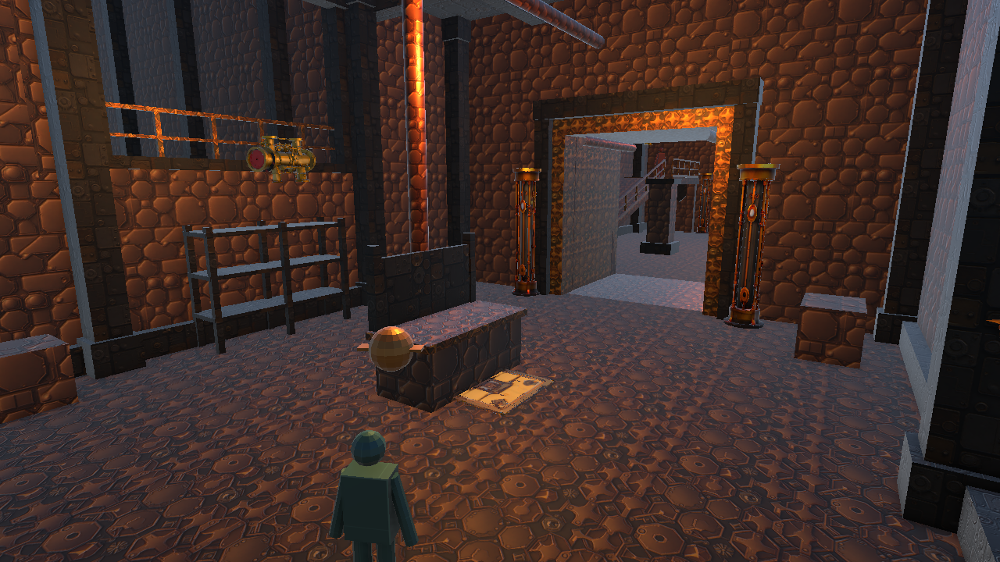
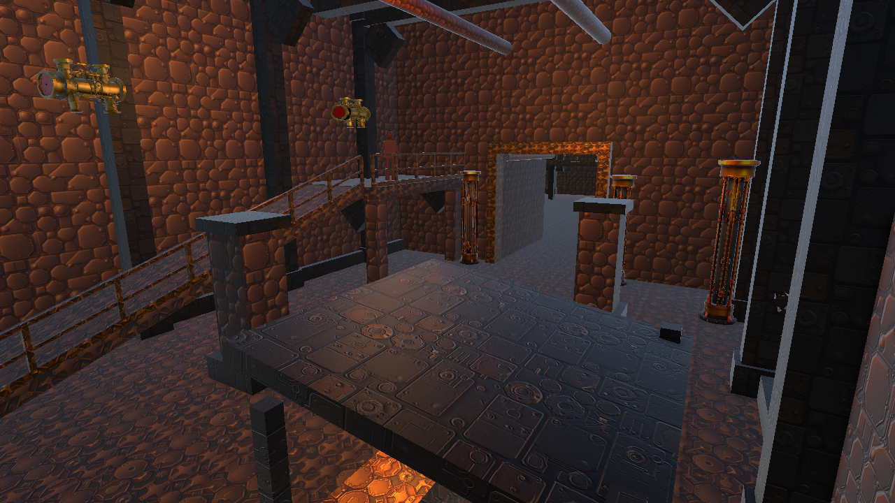
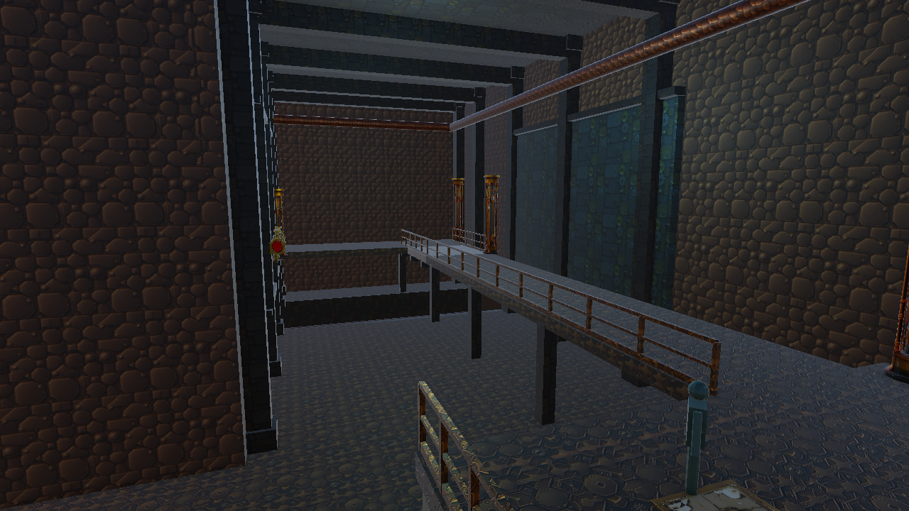
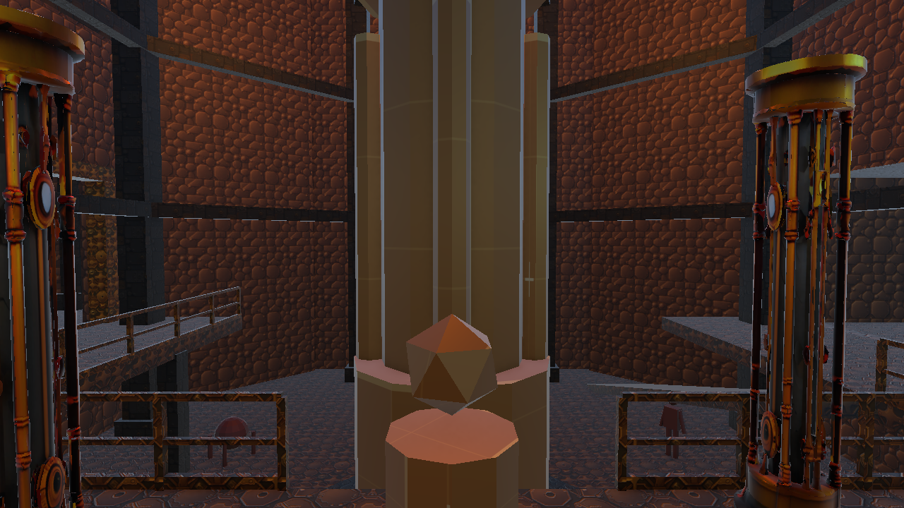
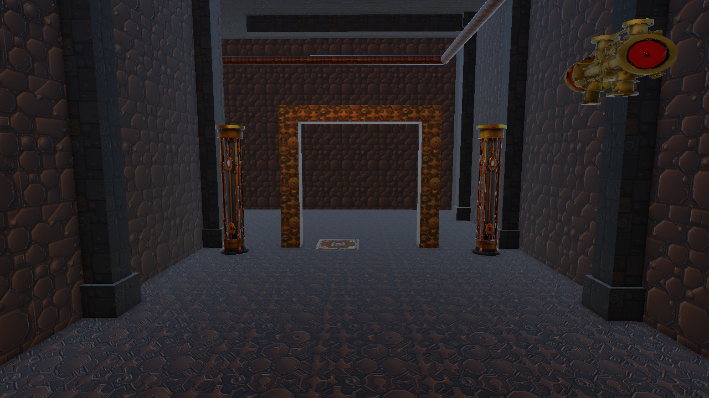
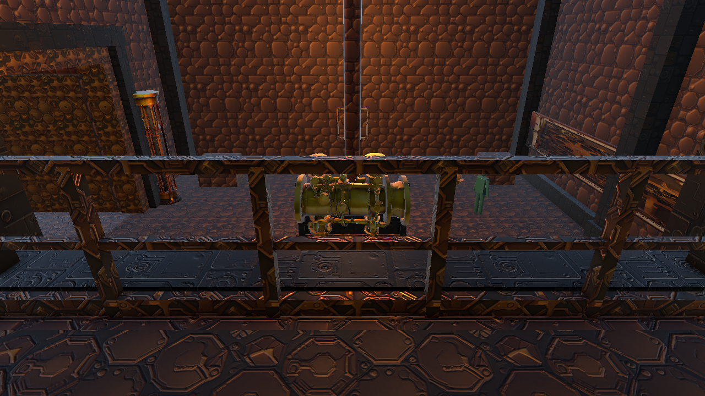
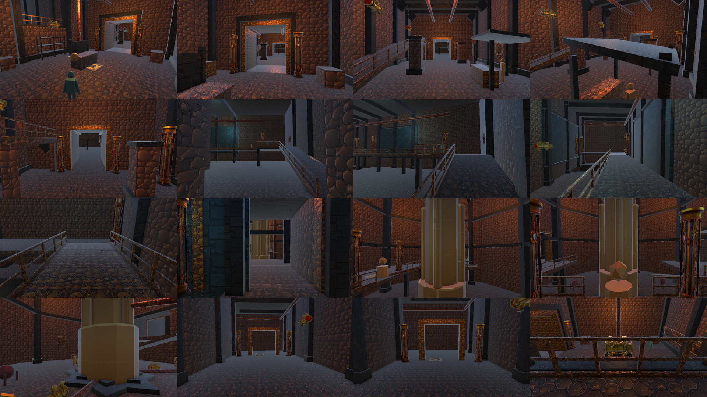

validate_scene --strict
PASS (exit 0)
Luzes Reais URP
5 / 5
Tris Estimados
70.500 / 150.000
Draw Calls
20 / 120
Static Batching
90.8% (≥50%)
Textura VRAM
5.06 / 128 MB
PlayMode M1–M2
2 / 2 PASSED
Peças Kit 4.0
36 instâncias
▶ Walkthrough Completo Fase 4.1 (Z1 → Z2 → Z3 → Z4 → Z5 → Mirante sobre Z1)
AGUARDANDO APROVAÇÃO DO BRUNOLinguagem visual aplicada: Latão/cobre/ferro escuro rebitado clockwork-industrial, tiling world-scale constante (
1 tile = 1.25–2.0 m) com Normal Maps, 36 instâncias dos 4 prefabs do Kit 4.0 (TripoSG + Hunyuan3D-Paint) e 5 luzes reais calibradas.Z1 — Oficina da Sucata
FASE 4.1
Oficina vestida com piso PBR latão/ferro, paredes cobre de caldeira, 2 pilares do Kit 4.0 flanqueando o Arco Z1→Z2, medalhão de piso sob a Bancada I1 e duto de vapor sob o janelão do Mirante Z5.
Z2 — Passarela da Bigorna
FASE 4.1
Nave industrial com toldo em ferro escuro rebitado sobre o Tio Horário, guarda-corpos de latão na rampa e mezanino, 4 pilares e 2 dutos de vapor do Kit 4.0 guiando a composição para o Arco Z3.
Z3 — Pátio das Sirenes + Galeria de Fumaça
FASE 4.1
Contraponto de luz fria de vapor sobre os paredões azul-aço rebitados (8 m), passarela de latão, 4 pilares do Kit 4.0 marcando as cabeceiras da ponte sobre o fosso e dutos de vapor.
Z4 — Câmara Octogonal do Caldeiral Central
FASE 4.1
Cúpula octogonal em cobre e ferro escuro com 2 pilares monumentais do Kit 4.0 emoldurando o Nó de Re-Sincronia I5 e a Sirene-Mestra sob a luz zenital âmbar, com dutos do Kit 4.0 ligados às 3 Válvulas.
Z5 — Galeria de Retorno Sync
FASE 4.1
Galeria Sync em cobre e ferro escuro com 2 pilares do Kit 4.0 flanqueando a Catraca de Saída I6, medalhão no piso e duto de vapor na parede superior direita.
Z5 → Z1 — Visada do Mirante Vestido
LOOP FECHADO
Vista do Mirante sobre a Oficina Z1 vestida, com guarda-corpo em latão, duto de vapor em primeiro plano e pilar do Arco Z1→Z2 à esquerda.
Folha de Contato 4×4 do Walkthrough 4.1
RESUMO VISUAL
📋 Fila de Decisões do Diretor — Densidade de Vestimenta por Zona
DECISÃO DO DIRETOR
Proposta aplicada na Fase 4.1 (36 instâncias hero do Kit 4.0 em ~1.350 m² ≈ 0.027 peças/m², ~1 ponto de assinatura a cada 6 m):
| Zona | Área Aprox. | Peças Kit 4.0 | Densidade | Composição |
|---|---|---|---|---|
| Z1 — Oficina da Sucata | 168 m² | 6 | 0.036 / m² | 2 pilares + 1 duto + 2 painéis + 1 medalhão |
| Z2 — Passarela da Bigorna | 252 m² | 8 | 0.032 / m² | 4 pilares + 2 dutos + 1 painel + 1 medalhão |
| Z3 — Pátio + Galeria Fumaça | 464 m² | 8 | 0.017 / m² | 4 pilares + 2 dutos + 1 painel + 1 medalhão |
| Z4 — Câmara Caldeiral Central | 484 m² | 9 | 0.019 / m² | 4 pilares + 3 dutos + 1 painel + 1 medalhão |
| Z5 — Galeria Sync + Mirante | 306 m² | 5 | 0.016 / m² | 2 pilares + 1 duto + 1 painel + 1 medalhão |
Pergunta para o Bruno: Manter essa densidade equilibrada (100% dentro do budget Android URP, leitura limpa para gameplay) ou adensar mais alguma zona (ex.: Z3/Z4) antes de partir para o C5 (heróis & props autorais da Fábrica 3D)?